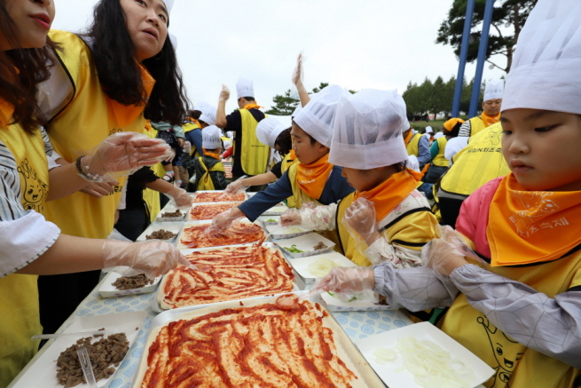

1997년 시작으로 전라북도 전주시에 5월에 개최하는 축제로, 천년전주 한지의 우수성을 널리 알리고, 전통한지공예 경진대회를 통하여 전국의 우수 공예인을 발굴하는 한편, 전주한지 산업화에 기여하고자 합니다. 한지가 가지는 다양한 기능을 문화로 재해석하여 천년동안 사람과 함께 어울렸던 한지를 축제를 통해 표현하고 전주한지의 비전을 제시하고 교류하는 전주를 대표하는 축제입니다.
02
전주세계소리축제
전주세계소리축제는 우리 전통음악을 중심으로 세계 다양한 월드뮤직을 한자리에서 만날 수 있는 축제입니다. 우리음악을 기반으로 한 다양한 실험과 시도, 해외 뮤지션들과의 콜라보 등 매력적이고 창의적인 기획으로 매해 가을, 관객을 찾아갑니다. 특히 어린이소리축제를 통해 어린이와 가족단위 관람객을 위한 풍성한 공연과 체험, 워크숍이 준비되어 있습니다. 2018 전주세계소리축제는 세계 월드뮤직축제를 대상으로 평가되는 TWMC 베스트 페스티벌에서 1위를 수상하며 우리나라를 뛰어 넘어 세계적인 축제로 그 위상을 인정받았습니다.

03
임실N치즈축제
임실N치즈축제는 전북 임실에서 개최된다. 임실치즈가 대한민국 대표 치즈브랜드로서 임실치즈의 우수성을 널리 알리고자 임실치즈와 체험관광을 접목한 새로운 축제를 개최한다. 두메산골 한우와 떠나는 치즈여행이라는 부제로 열리는 임실N치즈축제에서는 암소한우만으로 구성된 한우명품관과 치즈요리를 맛보는 치즈요리관을 만날 수 있고 홈메이드 치즈 제조와 치즈 과학 실험 등 다양한 치즈체험, 낙농체험 등을 즐길 수 있어 즐거움과 배움을 동시에 만족할 수 있다.
04
가맥축제
안주 맛에 놀라고 맥주 맛에 반하다! 오늘 만든 맥주를 오늘 마실 수 있는 유일한 축제
05
익산 천만송이 국화축제
매년 10월말 ~ 11월초 사이 익산 중앙체육공원에서 열리는 축제이며, 국화 야외 전시 및 우리지역 농특산물 홍보 및 판매, 전국 국화작품 경연대회, 문화공연 등 다채로운 행사가 열린다. 전 시민이 함께하는 지역축제로서 주요도심 국화식재 및 축제기간에 아파트 베란다, 상가, 각급기관, 단체 등에 국화화분 내놓기 범시민운동전개로 통합축제의 성공적 개최 및 익산 도시브랜드 이미지제고 축제이다.